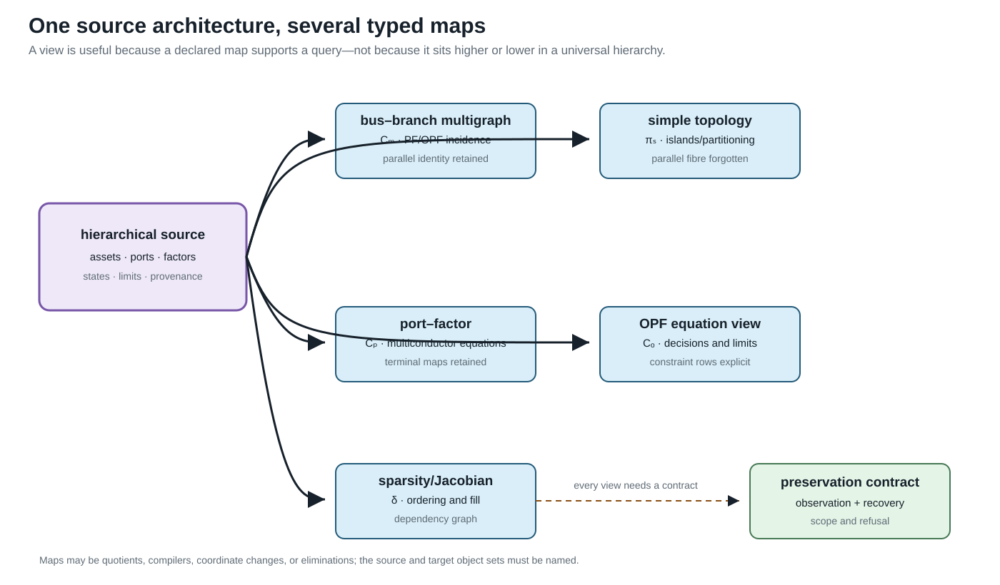
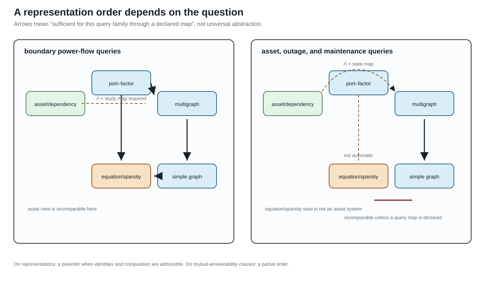
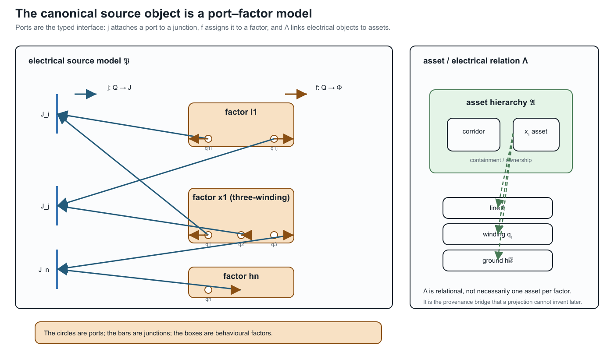

Formal representation frameworks
Page status: formal framework definitions with a checked structural architecture witness; evaluated-factor coverage remains open.
Purpose and status
This chapter gives a first mathematical specification of the principal representation frameworks used in the book. The definitions are adopted book conventions. The claim that the linked asset and hierarchical port–factor models are an adequate common source remains a proposal to test.
The frameworks are not one chain from detailed to simple. Three describe different electrical resolutions, one records orthogonal physical and organizational relations, and another family is compiled for computation.
The companion representation taxonomy is the reader-facing level map; this chapter is the normative mathematical specification for those levels and their linked source structures. The implementation status of the executable facade and fixture matrix is kept in the representation implementation record, rather than being a competing architecture chapter. In particular, equation and sparsity graphs are computational projections, not a fifth semantic level, and the asset/dependency model is linked to—but not nested inside—the electrical port–factor model.
| Framework | Primary purpose | Status |
|---|---|---|
| simple topology graph | connectivity, islands, partitioning, and algorithms that cannot use parallel edges | derived quotient |
| oriented attributed multigraph | identified two-terminal equipment and conventional bus–branch models | derived engineering view |
| hierarchical port–factor incidence model | multiconductor, multi-terminal, coupled, ideal, constrained, and controlled equipment | proposed canonical electrical source model |
| asset/dependency relation model | structures, ownership, protection, failures, maintenance, and provenance | orthogonal companion source model |
| equation and sparsity graphs | algebraic coupling, ordering, decomposition, and solver structure | compiled computational views |
There is no context-free network graph. Each row above defines a different object with different admissible queries. The translation-traps chapter gives controlled replacements for this and other familiar shorthand.
A node, edge, or message graph supplied to a learning architecture is a compiled computational view. It is not the source ontology unless its map from assets, ports, factors, states, limits, and provenance is declared. Heterogeneous node and edge types help express that map, but do not prove that parallel identity or n-port semantics survived compilation.
Here canonical means the selected source formalism for this book. It does not mean that adequacy or uniqueness has already been established.


These two plates belong here as well as in the detailed map chapter. This is the PDF-facing definition of the objects; the map chapter supplies the fuller map vocabulary and proofs. The arrows are query- and contract-indexed, not a single “more detailed” ordering.
The wider literature contains other valid graph and equation families. Their selection and relationship to these rows is surveyed in the literature map and the circuit formulations and lowering boundary. The definitions below are therefore the book's scoped source/view contract, not a claim that every power-network study should use the same formalism.
The normative finite-multigraph object, including flags, loops, degree and matrix conventions, is defined in Multigraphs for expert modelers. This chapter specializes that object to the loopless two-terminal engineering views used by the current executable cases; it does not introduce a competing multigraph convention.
Simple topology graph
Definition. A loopless undirected simple topology graph is a pair
\[G_{\mathrm{s}}=(\mathcal B,E_{\mathrm s}), \qquad E_{\mathrm s}\subseteq \bigl\{\{i,j\}:i,j\in\mathcal B,\ i\ne j\bigr\}.\]
An optional weight map $w:E_{\mathrm s}\rightarrow\mathcal W$ does not restore the identities of several source elements mapped to the same edge. Its codomain and aggregation rule must be declared: a conductance, distance, capacity, and binary adjacency have different semantics.
Let a loopless identified multigraph, in the normative flag convention, have line set $\mathcal L$ and derived unordered endpoint map $\partial:\mathcal L\rightarrow\binom{\mathcal B}{2}$, where the codomain is the set of two-element subsets of $\mathcal B$. Its simple projection is
In this loopless specialization $\mathcal L^{\circ}=\mathcal L$; the superscript is retained on the map domain to make the non-loop restriction explicit.
\[\operatorname{simp}:\mathcal L^{\circ}\rightarrow E_{\mathrm s}, \qquad \operatorname{simp}(\ell)=\partial\ell, \qquad E_{\mathrm s}=\operatorname{im}\partial.\]
Thus $\ell_1\sim_{\operatorname{simp}}\ell_2$ exactly when the two lines have the same unordered endpoints.
Proposition. If the loopless multigraph has $c$ connected components, then its cycle rank and that of its simple projection satisfy
\[\begin{aligned} \mu_{\mathrm M}&=|\mathcal L|-|\mathcal B|+c,\\ \mu_{\mathrm s}&=|E_{\mathrm s}|-|\mathcal B|+c,\\ \mu_{\mathrm M}-\mu_{\mathrm s} &=\sum_{e\in E_{\mathrm s}}\bigl(|\operatorname{simp}^{-1}(e)|-1\bigr). \end{aligned}\]
Proof. Collapsing parallel identity does not change the vertex set, adjacency relation, or connected components. Subtracting the two standard cycle-rank identities gives $|\mathcal L|-|E_{\mathrm s}|$. Partitioning $\mathcal L^{\circ}$ into the nonempty fibres of $\operatorname{simp}$ gives the final sum.
The projection therefore preserves connectivity and islands, but not the line-indexed cycle space, member states, or member constraints. A simple topology graph is also not automatically a nodal-admittance sparsity graph: after electrical stamping, cancellation or terminal-coordinate structure can make the matrix support different from bare adjacency.
Oriented attributed multigraph
Definition (loopless engineering specialization). An oriented attributed multigraph is the normative flag object
\[G_{\mathrm M} = (\mathcal B,\mathcal L,\mathcal F,s,\operatorname{ed},o,a),\]
restricted here to edges whose two flags map to different buses. The maps $s:\mathcal F\to\mathcal B$ and $\operatorname{ed}:\mathcal F\to\mathcal L$ record incidence, each fibre $\operatorname{ed}^{-1}(\ell)$ contains two flags, $o$ orders those flags as tail and head, and $a$ is a family of typed attribute maps. The derived endpoint functions $\partial^-$ and $\partial^+$ return the buses of the ordered tail and head flags. Parallel elements remain distinct members of $\mathcal L$ even when both derived endpoint functions agree.
The incidence matrix associated with the selected orientation is
\[A_{i\ell} = \begin{cases} -1,&i=\partial^-(\ell),\\ +1,&i=\partial^+(\ell),\\ 0,&\text{otherwise}. \end{cases}\]
Reorienting a line negates its incidence column. It does not change its physical incidence or assert a change in operating-point power transfer. The precise distinction between physical incidence, reference orientation, terminal signs, and power direction is developed in Orientation, terminal quantities, and power transfer.
Typical attributes include terminal maps, a symmetric element impedance $\mathbf Z_\ell$, end-specific shunts $\mathbf Y^{\mathrm{sh}}_{\ell ij}$, states, limits, and provenance. The multigraph becomes a PF or OPF model only after constitutive relations, injections, constraints, controls, and an objective or observation map are attached. A genuinely multi-terminal device belongs here only after an explicit two-terminal compilation with provenance.
Hierarchical port–factor incidence model
Definition. A hierarchical port–factor incidence model is a tuple
\[\mathfrak P = (\mathcal Q,\mathcal J,\Phi,j,f,\mathcal H, \{\mathcal X_q\}_{q\in\mathcal Q}, \{\mathcal R_\phi\}_{\phi\in\Phi}).\]
Here:
- $\mathcal Q$ is a finite set of typed, ordered ports;
- $\mathcal J$ is a finite set of junctions;
- $\Phi$ is a finite set of behavioural factors;
- $j:\mathcal Q\rightarrow\mathcal J$ attaches each port to a junction;
- $f:\mathcal Q\rightarrow\Phi$ assigns each port to its owning factor;
- $\mathcal H$ is a rooted containment forest with declared subsystem boundaries;
- $\mathcal X_q$ is the variable space carried by port $q$;
- $\mathcal R_\phi$ is the factor relation on the ordered ports $\mathcal Q_\phi=f^{-1}(\phi)$.
A static factor relation may be written
\[\mathcal R_\phi \subseteq \prod_{q\in\mathcal Q_\phi}\mathcal X_q \times\mathcal U_\phi \times\Theta_\phi,\]
where $\mathcal U_\phi$ contains continuous or discrete decisions and $\Theta_\phi$ contains fixed parameters. Equations, inequalities, measurements, and uncertainty sets are all relations rather than new graph edge types.

The circles in this figure are not decorative edge endpoints. They are the typed ports in $\mathcal Q$. The two incidence maps have different domains and meanings: $j$ attaches a port to a junction, while $f$ assigns that same port to its owning factor. The dashed $\Lambda$ links are many-to-many provenance relations to the asset model. This is the glyph vocabulary reused by the later factor and lowering diagrams.
For junction $k$, let $\mathcal Q_k=j^{-1}(k)$. Its junction relation $\mathcal R_k^{\mathrm J}$ enforces compatible effort variables after the declared terminal-coordinate maps and conservation of signed flow variables. For electrical phasor ports these are voltage compatibility and KCL.
Given boundary ports $\partial\mathcal Q$, the external behaviour is
\[\mathfrak B(\mathfrak P) = \operatorname{proj}_{\partial\mathcal Q} \left\{ z:\ z_{\mathcal Q_\phi}\in\mathcal R_\phi\ \forall\phi, \quad z_{\mathcal Q_k}\in\mathcal R_k^{\mathrm J}\ \forall k \right\}.\]
Here $\mathfrak B(\mathfrak P)$ denotes external behaviour; the bus set $\mathcal B$ used by the simple and multigraph definitions is a different object. This definition makes an ordinary two-terminal line one factor of arity two, not the template for every device. A multiwinding transformer, coupled line group, converter, grounding relation, or shared control can retain its natural port arity. Hierarchy determines ownership of internal variables and the boundary across which behavioural reduction is defined.
Minimal executable witness
The first executable architecture slice is recorded in experiments/generated/port-factor-architecture.json. It instantiates $\mathfrak P$ for the two heterogeneous parallel lines, the three-port transformer $x_1$, and the neutral grounding factor $h_n$. The validator checks that every port has a declared junction and owning factor, that the three winding ports remain one factor of arity three, and that the relation
\[\Lambda\subseteq (\mathcal V_A\cup\mathcal R_A)\times(\mathcal Q\cup\mathcal J\cup\Phi)\]
contains both one-to-one realizations and the four relations from asset $x_1$ to its transformer factor and winding ports. This is a structural data witness, not yet a numerical factor evaluator: the relation signatures are declared strings and the electrical equations are tested by the existing transformation artifacts.
This witness is the evidence object for ARCH-PORT-001, whose claim is that the typed incidence, multiwinding factor, explicit grounding factor, and many-to-many $\Lambda$ link can be represented together without collapsing their identities. The claim is deliberately limited: it validates the structure and its declared link signatures, not the adequacy of the proposed architecture for arbitrary asset models or a general evaluated-factor semantics. The generated artifact is indexed in the knowledge-base evidence register.
The same construction is now applied directly to the five-bus line-identity multigraph in experiments/generated/five-bus-port-factor-witness.json. It creates five bus junctions, fourteen endpoint ports, and seven distinct two-port scalar line factors. In particular, $q$ and $r$ remain separate factors even though their endpoints project to the same simple-graph edge. This is claim ARCH-PORT-002: a structural fixture lift that preserves identity and orientation, not a numerical factor evaluator or a new AC model.
The companion artifact experiments/generated/five-bus-conductor-terminal-lift-witness.json makes the scalar special case explicit: each of the seven identified lines has two scalar endpoint ports attached to one of five terminal junctions. The $q/r$ parallel fibre remains visible in the terminal incidence and retains the extra line-identity cycle dimension. This is claim ARCH-CONDUCTOR-002; it is a structural lift, not a multiconductor, switch, or transformer calculation.
Asset and dependency relation model
Definition. An asset/dependency relation model is a typed attributed multi-relational structure
\[\mathfrak A = (\mathcal V_A,\mathcal R_A,\tau_V,\tau_R,\iota,\alpha).\]
The type maps $\tau_V$ and $\tau_R$ classify entities and relations, $\alpha$ stores typed properties, and
\[\iota:\mathcal R_A \rightarrow \bigcup_{n\ge1}\mathcal V_A^n\]
gives each relation an ordered finite incidence. Binary relations recover ordinary source and target maps. The incidence defines relations such as contains, mounted_on, protected_by, owned_by, located_at, shares_failure_mode_with, and derived_from. Relations that are naturally many-way therefore remain hyperrelations rather than being forced into one untyped simple edge.
The link to the electrical model is generally a relation
\[\Lambda \subseteq (\mathcal V_A\cup\mathcal R_A) \times (\mathcal Q\cup\mathcal J\cup\Phi),\]
not a function. One asset may generate several electrical factors, one factor may depend on several assets, and generated factors may have no independent physical-asset identity. The asset model has no electrical behaviour merely because its relations are drawn as edges.
Equation, incidence, and sparsity graphs
For an equation system $F(x)=0$ and inequalities $g(x)\le0$, a variable–relation incidence graph has one vertex class for variables, another for relations, and an edge whenever a relation depends on a variable. A matrix sparsity graph instead follows the nonzero pattern of a declared matrix such as the compound nodal operator $\mathbf Y^{\mathrm N}$, a Jacobian, or a KKT matrix.
The normative block- and scalar-support definitions are in Two topology levels and the nodal projection. These graphs need separate definitions because their vertices may be buses, terminals, scalar variables, vector blocks, equations, or constraints. Schur elimination can remove variables while adding fill edges. A nonzero-pattern edge means algebraic coupling and is not evidence of a physical line.
Typed maps rather than a ladder
The proposed source pair is $(\mathfrak A,\mathfrak P,\Lambda)$. From it, different guarded maps can produce
\[(\mathfrak A,\mathfrak P,\Lambda) \longrightarrow G_{\mathrm M} \longrightarrow G_{\mathrm s},\]
while a study compiler produces
\[\mathfrak P \longrightarrow \text{equations and constraints} \longrightarrow \text{sparsity graphs}.\]
Neither row is a universal abstraction order. The asset relation model remains linked sideways because its ownership, protection, and failure questions are incomparable with electrical boundary behaviour.
The relevant within-framework morphisms, orientation actions, cross-framework transformations, and query-relative notion of expressiveness are defined in Maps between representation frameworks.
Remaining formal work
This first definition pass does not yet settle:
- categorical composition of hierarchical open systems;
- realizability of a general reduced multiport in a restricted device library;
- a type system for units, bases, conductor coordinates, and state spaces;
- the exact boundary between a factor relation and a study constraint;
- machine-checkable correspondence between the mathematical objects and data schemas.
Those are explicit foundation tasks, not assumptions hidden behind the word graph.